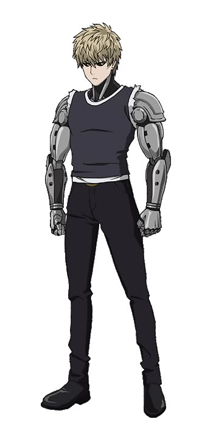
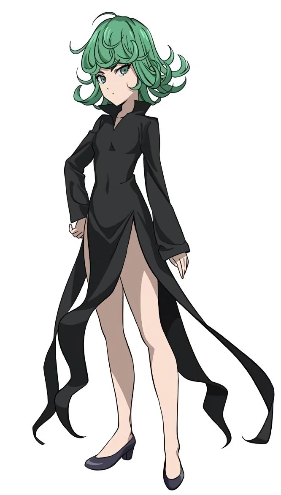
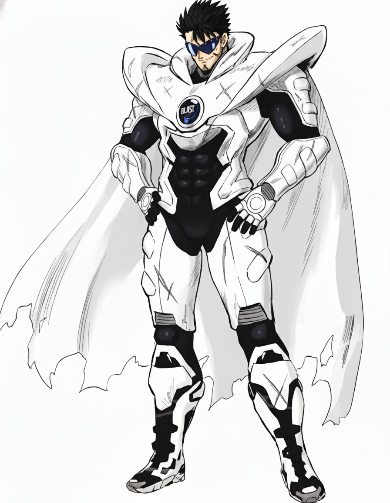
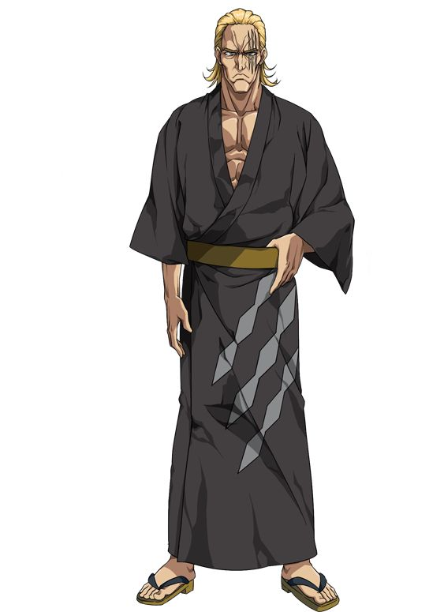

Saitama é o protagonista de One-Punch Man, um herói por hobby que treinou de forma tão intensa que perdeu todo o seu cabelo, mas alcançou uma força física absoluta. Na história, ele atua como uma força imparável e a âncora satírica do enredo, aparecendo no clímax para derrotar qualquer ameaça com um único golpe. Seu traço mais marcante é a profunda apatia e o tédio existencial, resultado direto de nunca encontrar um oponente capaz de lhe proporcionar um desafio real. Por fim, o seu grande propósito é justamente encontrar um adversário à altura que possa testar seus limites e devolver a emoção e o entusiasmo que sentia no início de sua jornada.

Genos
Genos, o "Ciborgue Demoníaco" de One-Punch Man, é um jovem ciborgue de 19 anos impulsivo e altamente focado, que atua como o discípulo leal de Saitama. Na história, ele serve como o contraponto sério e dramático para o humor da série, frequentemente se envolvendo em lutas de alto impacto e servindo como a principal ponte para explicar a força absurda do protagonista. Seu traço mais marcante é a busca incessante por melhorias corporais e poder absoluto, além de sua admiração cega e quase cômica por seu mestre. Seu propósito é vingar sua cidade natal destruída por um misterioso ciborgue louco, tornando-se cada vez mais forte para erradicar o mal.

Tatsumaki
Tatsumaki (o "Tornado do Terror") é a heroína Classe S, Rank 2 de One-Punch Man. Na história, ela atua como uma das forças mais poderosas da Associação de Heróis, capaz de destruir exércitos inteiros com sua telecinese avassaladora. Seu traço mais marcante é sua personalidade infantil, mandona e impaciente, que contrasta fortemente com sua idade adulta e seu poder divino. Seu propósito é proteger a humanidade e manter o status de heroína suprema, enquanto carrega traumas do passado que a tornam excessivamente protetora com sua irmã mais nova, Fubuki.

Blast
Blast, o herói Classe S, Rank 1 da Associação de Heróis em One-Punch Man, é uma figura lendária e misteriosa que raramente aparece. Na história, ele atua como o trunfo definitivo da humanidade contra ameaças cósmicas e dimensionais, usando portais de teletransporte para conter perigos catastróficos. Seu traço mais marcante é o forte senso de responsabilidade aliado a um ar enigmático e distante. Seu propósito é rastrear e conter Cubos misteriosos ligados a um ser cósmico supremo (Deus), protegendo a Terra de catástrofes em escala universal.

King
King, o herói Classe S, Rank 7 de One-Punch Man, é mundialmente aclamado como "o homem mais forte da Terra". Na história, ele atua como uma gigante farsa cômica: na realidade, é um gamer otaku completamente comum e covarde que acaba sempre no lugar errado e na hora errada. Seu traço mais marcante é o famoso "King Engine", o som aterrorizante de suas batidas cardíacas aceleradas pelo pavor, que todos interpretam erroneamente como uma aura assassina e imponente. Seu propósito é sobreviver a cada dia mantendo sua fachada intacta, contando com a extrema sorte (ou com a intervenção oculta de Saitama) para salvar sua pele e manter seu status lendário.